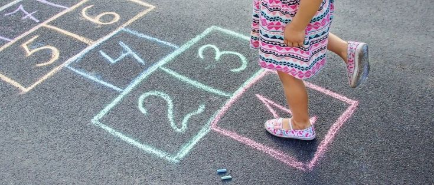

La rayuela es uno de los juegos tradicionales más antiguos y extendidos del mundo. Consiste en recorrer a saltos un diagrama numerado dibujado en el suelo, lanzando previamente una piedra o ficha a cada casillero. Es un juego que combina precisión, equilibrio y estrategia, y que se practica en prácticamente todos los países con diferentes nombres y variaciones.
El juego comienza cuando cada jugador elige su ficha (una piedra plana, una tapa o cualquier objeto pequeño). Se establece un orden de turnos y el primer jugador lanza su ficha al casillero número 1.
Si la ficha cae dentro del casillero sin tocar las líneas, el jugador salta con un solo pie por todos los casilleros, evitando aquel donde está su ficha. Al llegar al final, se da la vuelta y regresa saltando de la misma forma hasta el casillero anterior al de su ficha, se agacha, la recoge y salta fuera del diagrama.
Si logra completar el recorrido, en el siguiente turno lanzará la ficha al casillero 2 y repetirá el proceso. Gana quien primero complete el recorrido con todos los casilleros.
Este juego recibe nombres distintos según el país donde se practique:
Existen varias formas de jugar a la rayuela, dependiendo de la región y las reglas locales. Algunas variantes incluyen:
👥 Jugadores: De 2 a 5 participantes es lo ideal. Con más de 5, las esperas entre turnos se hacen muy largas.
⏱️ Duración: Una partida completa suele durar entre 10 y 20 minutos, dependiendo de cuántos jugadores haya.
🎯 Objetivo: Ser el primero en completar el recorrido lanzando la ficha en todos los casilleros, del 1 al último.
🧰 Materiales: Solo necesitas tiza para dibujar el diagrama y una piedra plana o ficha para cada jugador.
• Precisión al lanzar: Calcula la fuerza necesaria para que la ficha caiga justo dentro del casillero.
• Mantén el equilibrio: Salta sobre la punta del pie y activa el abdomen para no tambalearte.
• Memoriza el diagrama: Anticipa mentalmente qué pie usarás en cada casillero antes de empezar.